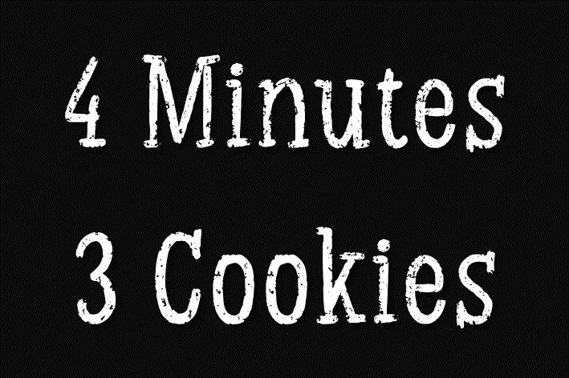

<!DOCTYPE html>
<html>
  <head>
    <title>My experiment</title>
    <script src="jspsych/jspsych.js"></script>
    <script src="jspsych/plugin-html-keyboard-response.js"></script>
    <script src="jspsych/plugin-survey-multi-choice.js"></script>
    <script src ="jspsych/plugin-html-button-response.js"></script>
    <script src="jspsych/plugin-survey-html-form.js"></script>
    <script src="jspsych/plugin-instructions.js"></script>
    <script src="jspsych/plugin-survey-likert.js"></script>
    <script src="jspsych/plugin-html-slider-response_cs2.js"></script>
    <script src="jspsych/plugin-survey-text.js"></script>
    <script src="jspsych/plugin-browser-check.js"></script>
    <script src="https://unpkg.com/@jspsych-contrib/plugin-pipe"></script>


    <link href="jspsych/jspsych.css" rel="stylesheet" type="text/css" />

    <style>

/* Multichoice styling: put images above the radio button */
      .jspsych-survey-multi-choice-option label {
        display: flex;
        flex-direction: column-reverse; /* Moves radio button below the image */
        align-items: center; /* Centers everything */
      }
    </style>
  </head>
  <body></body>
  <script>

// Initialize jsPsych -----------------------------------------------------------------
//    var jsPsych = initJsPsych({
//      on_finish: function() {
//        jsPsych.data.get().localSave('csv', 'experiment_data.csv'); // Auto-download CSV
//    }
//    });

    var jsPsych = initJsPsych({});

// Create Timeline --------------------------------------------------------------------------
    var timeline = [];

    
// Browser exclusion ------------------------------------------------------------------
    var browser_check = {
      type: jsPsychBrowserCheck,
      inclusion_function: (data) => {
        return data.browser === 'firefox'|| data.browser === 'chrome' && data.mobile === false
      },
      exclusion_message: (data) => {
        if(data.mobile){
          return "p>You must use a desktop computer or laptop to participate in this study.</p>";
        } else if (data.browser !== 'firefox' && data.browser !== 'chrome'){
          return "<p>You must use Chrome or Firefox to complete this study.</p>"+
                 "<p>If you want to complete the study, please copy and paste the study link into one of the compatible browsers.</p>";
        }
      }
    }
    timeline.push(browser_check);


// Consent form --------------------------------------------------------------------------
    var consent = {
      type: jsPsychHtmlButtonResponse,
      stimulus:
      `<div style='text-align: center; margin-left: 80px; margin-right: 80px; border: 2px solid black; font-size: 90%;'>  
        <p><strong>Study Title:</strong><br>Preferences for food products</p>
        <p><strong>Researcher:</strong><br>Coralie Samson, University Grenoble Alpes (France)</p> </div>
        <div style='text-align: left; margin-left: 80px; margin-right: 80px; font-size: 90%;'>
        <p><strong>Participation is voluntary:</strong></br>If you choose to participate, you may change your mind and leave the study at any time.  Refusal to participate or stopping your participation will involve no penalty or loss of benefits to which you are otherwise entitled.</p>
        <p><strong>What is the purpose of this research?</strong></br>The purpose of this study is to learn more about people's preferences when they buy food products.</p>
        <p><strong>How long will I take part in this research?</strong></br>We expect your participation to take approximately 5 minutes.</p>
        <p><strong>What can I expect if I take part in this research?</strong></br>You will make choices between different food products. You will answer a few demographic questions and questionnaires.</p>
        <p><strong>Are there risks and possible discomforts?</strong></br>There are no anticipated risks, except that you may get tired. You can rest at any time.</p>
        <p><strong>Are there any benefits from being in this research study?</strong></br>We do not expect any direct benefits to you from your taking part in this research.</p>
        <p><strong>Will I be compensated for participating in this research?</strong></br>You will receive 50cts if you complete the study.</p>
        <p><strong>If I take part in this research, how will my privacy be protected? What happens to the data you collect?</strong></br>
          The data will be analysed by the researchers and may be reviewed by people checking to see that the research is done properly. 
          We will keep the data confidential. We will not collect personally identifiable information. 
          We may publish the results of this research study or use them for teaching. 
          We will not include identifiable information when presenting these results.</p>
        <p><strong>If I have any questions, concerns, or complaints about this research study, who can I talk to?</strong></br>
          Please contact Coralie Samson at coralie.samson@univ-grenoble-alpes.fr. She can provide you with a copy of this document.</p>`,
      choices: ['<strong> I agree to the terms above and consent to participating in the study. </strong>'],
      }
      timeline.push(consent);


// Instructions --------------------------------------------------------------------------
    var instr = {
        type: jsPsychInstructions,
        pages: [
        `<div style="margin-left: 80px; margin-right: 80px"><strong>Welcome.</strong><p>In this study, 
          we want to gain insight into peoples’ preferences when choosing food items, such as cookies. 
          You will read a scenario and make decisions for different options.</p></div>`,
        `<div style="margin-left: 80px; margin-right: 80px"><p><i>Please take a moment to imagine the following scenario.</i></p>
          </img><br>
          <p>A bakery is changing their baking process.
           Usually, they bake bite-sized cookies, such as the one above, in big batches.
           This ensures that there is plenty of supply most of the time.
           Therefore customers seldom have to wait for a new batch when they order.
           But customers rarely have the opportunity to purchase freshly baked cookies.</p></div>`,
        `<div style="margin-left: 80px; margin-right: 80px"><p><i>Please take a moment to imagine the following scenario.</i></p>
          </img><br>
          <div style="margin-left: 80px; margin-right: 80px"><p>With the <strong>new baking process</strong>,
           the batches are smaller and thus more frequent. The advantage of such a method is that
           customers can purchase <strong>freshly baked cookies at all times</strong>.
           But the <strong>waiting time to receive the order varies</strong>
           depending on how many batches are currently baking, how many orders are pending and how many cookies
           customers purchase.</p></div>`,
        `<div style="margin-left: 80px; margin-right: 80px"><p><i>Please take a moment to imagine the following scenario.</i></p>
          </img><br>
          <p>Customers place their orders via a screen at the entrance of the bakery. The screen displays 
          <strong>available offers</strong> as well as <strong>current waiting times</strong>.
           The information is updated regularly and automatically. 
          Because this procedure is new, the bakery wants to test it before generalizing it.</p></div>`,
        `<div style="margin-left: 80px; margin-right: 80px"><p><i>Please take a moment to imagine the following scenario.</i></p>
          </img><br>
          <p>In order to test the procedure, the bakery offers <strong>freshly baked cookies for free</strong>.
           On the next page, you will see the available offers and waiting times. Please choose the offer you prefer.</p></div>`
        ],
        show_clickable_nav: true
    }
    timeline.push(instr);


// Main choice task --------------------------------------------------------------------------
    // create different sets of options (i.e., decoy conditions); shuffle order
    var D_small = jsPsych.randomization.sampleWithoutReplacement([
      "",
      "",
      ""
    ], 3);
    var D_big = jsPsych.randomization.sampleWithoutReplacement([
      "",
      "",
      ""
    ], 3);
    var D_abs = jsPsych.randomization.sampleWithoutReplacement([
      "",
      ""
    ], 2);

    // select one stimuli set
    var conditions = jsPsych.randomization.sampleWithoutReplacement(
      [D_small, D_big, D_abs], 1)[0];

    // create task
    var main_choice_task = {
      type: jsPsychSurveyMultiChoice,
      questions: [
        {
          prompt: "Which option do you prefer?",
          options: conditions,
          required: true,
          horizontal: true
        }
      ]
    }
    timeline.push(main_choice_task);


// Questions post choice --------------------------------------------------------------------------

    // page 1 - instr
    var instr_post = {
        type: jsPsychInstructions,
        pages: [`Thank you. <p>Next we will ask a few follow-up questions.
        <br>We want to gauge whether individual preferences and food-related habits influence choices.`],
        show_clickable_nav: true,
        allow_backward: false
    }
    timeline.push(instr_post);

    // page 2 - last meal time and description

    let last_meal_combined ={
      type: jsPsychHtmlSliderResponse,
      stimulus: `
        <i>Please answer both questions below.</i><br><br>
        <p style="font-size: 16px;">Please describe with as much details as possible 
          <br><strong>the foods you ate last time you ate something.<br></strong>
          (for instance, a full plate of pasta with cheese, two pieces of bread...)</p>
        
        <input id="meal-description" type="text"
               style="width: 100%; max-width: 500px; font-size: 16px;"/>
        <br><br>
        
        <p style="font-size: 16px;"><strong>How long ago did you eat, the last time you did?</strong><br>
          Please select a value by moving the slider below.</p>
        
        <p style="font-size: 16px;">
          I last ate <strong><span id="answer-display">xx</span></strong> hours ago.
        </p>
      `,
      labels: ['0h', '12h', '24h'],
      min: 0,
      max: 24,
      step: 0.5,
      start: 12,
      slider_width: 500,
      require_movement: false, // We handle validation manually
      button_label: "Continue",
      
      on_load: function() {
        let textInput = document.getElementById("meal-description");
        let slider = document.getElementById("jspsych-html-slider-response-response"); // jsPsych slider ID
        let button = document.getElementById("jspsych-html-slider-response-next"); // Continue button
        let sliderMoved = false;
      
        // disable button on start
        button.disabled = true;
      
        // save text input
        if (textInput) {
          textInput.addEventListener("input", function() {
            mealDescription = textInput.value;
          });
        };

        function checkCompletion() {
          if (textInput.value.trim().length > 0 && sliderMoved) {
            button.disabled = false; // Enable button when both fields are completed
          } else {
            button.disabled = true; // Otherwise, keep it disabled
          }
        };
      
        // Track text input changes
        textInput.addEventListener('input', checkCompletion);
      
        // Track slider movement and update display
        slider.addEventListener('input', function() {
          sliderMoved = true; // Mark slider as moved
          document.getElementById('answer-display').innerText = slider.value; // Update displayed value
          checkCompletion();
        });
      
        // Prevent submission if either field is empty
        button.addEventListener('click', function(event) {
          if (textInput.value.trim().length === 0 || !sliderMoved) {
            event.preventDefault(); // Stop jsPsych from proceeding
          } else {
            jsPsych.data.get().addToLast({ //Store text typed locally
                    drink_description: textInput.value,
                    slider_value: slider.value
                });
          }
        });
      },
      on_finish: function(data) {
    data.meal_description = mealDescription; // Store text typed globally
  }
    }
    timeline.push(last_meal_combined);

    // page 3 - last drink time and description
    let last_drink_combined = {
      type: jsPsychHtmlSliderResponse,
      stimulus: `
        <i>Please answer both questions below.</i><br><br>
        <p style="font-size: 16px;">Please describe with as much detail as possible <br> <strong>the last sweet beverage you drank.</strong>
          <br>(for instance, orange juice, about 21 oz...)</p>
        
        <input id="drink-description" type="text"
               style="width: 100%; max-width: 500px; font-size: 16px;"/>
        
        <br><br>
        
        <p style="font-size: 16px;"><strong>How long ago did you drink a sweet beverage?</strong><br>
          Please select a value by moving the slider below.</p>
        
        <p style="font-size: 16px;">
          I last drank a sweet beverage <strong><span id="answer-display">xx</span></strong> hours ago.
        </p>
      `,
      labels: ['0h', '12h', '24h'],
      min: 0,
      max: 24,
      step: 0.5,
      start: 12,
      slider_width: 500,
      require_movement: false, // We handle validation manually
      button_label: "Continue",
      
      on_load: function() {
        let textInput2 = document.getElementById("drink-description");
        let slider = document.getElementById("jspsych-html-slider-response-response"); // jsPsych slider ID
        let button = document.getElementById("jspsych-html-slider-response-next"); // Continue button
        let sliderMoved = false;
      
        // disable button on start
        button.disabled = true;
      
        // save text input
        if (textInput2) {
          textInput2.addEventListener("input", function() {
            drinkDescription = textInput2.value;
          });
        };

        function checkCompletion() {
          if (textInput2.value.trim().length > 0 && sliderMoved) {
            button.disabled = false; // Enable button when both fields are completed
          } else {
            button.disabled = true; // Otherwise, keep it disabled
          }
        };
      
        // Track text input changes
        textInput2.addEventListener('input', checkCompletion);
      
        // Track slider movement and update display
        slider.addEventListener('input', function() {
          sliderMoved = true; // Mark slider as moved
          document.getElementById('answer-display').innerText = slider.value; // Update displayed value
          checkCompletion();
        });
      
        // Prevent submission if either field is empty
        button.addEventListener('click', function(event) {
          if (textInput2.value.trim().length === 0 || !sliderMoved) {
            event.preventDefault(); // Stop jsPsych from proceeding
            } 
          });
       
      },
      on_finish: function(data) {
        data.drink_description = drinkDescription; // Store globally
    }
    }
    timeline.push(last_drink_combined);


    // page 4 - want cookies
    var want_cookies = {
            type: jsPsychHtmlSliderResponse,
            stimulus: `<div style="width:500px;">
              <p>How much do you want to eat cookies right now? </p>
              <div style="float: inline-start; font-size: 80%;"><p>Not at all</p></div>
              <div style="float: inline-end; font-size: 80%;"><p>Very much</p></div>`,
            min: 1,
            max: 8,
            start: 1,
            step: 1,
            require_movement: true,
            labels: ['1', '2', '3', '4', '5', '6', '7', '8'],
            slider_width: 300
        }
        timeline.push(want_cookies);

    // page 5 - predicted pleasure cookies
    var predicted_pleasure_cookies = {
        type: jsPsychHtmlSliderResponse,
        stimulus: `<div style="width:500px;">
          <p>How pleasurable would it feel to eat cookies right now? </p>
          <div style="float: inline-start; font-size: 80%;"><p>Not pleasurable at all</p></div>
          <div style="float: inline-end; font-size: 80%;"><p>Extremely pleasurable</p></div>`,
        min: 1,
        max: 8,
        start: 1,
        step: 1,
        require_movement: true,
        labels: ['1', '2', '3', '4', '5', '6', '7', '8'],
        slider_width: 180
    }
    timeline.push(predicted_pleasure_cookies);

    // page 6 - chocie number cookies
    var n_cookies = {
      type: jsPsychSurveyHtmlForm,
      preamble: 'If you could eat cookies like the one below right now, how many would you eat?<br><br></img><br><br><i>Please type a number between 0 and 20 in the box below:</i></p>',
      html: '<input type="number" id="n_cookies" name="n_cookies" min="0" max="20" required><br><br>'//,
    }
    timeline.push(n_cookies);

    //page 7 - options rating
    var labels_options_rating = [
      "Dislike very much",
      "Dislike moderately",
      "Dislike slightly",
      "Like slightly",
      "Like moderately",
      "Like very much"
    ];

    var options_rating = {
      type: jsPsychSurveyLikert,
      preamble: `Below are a few cookies options. 
      <br>Among these, there are options you saw before, but other options are new. <br>
      <strong> How much do you like each option below? </strong>`,
      questions: [
        {prompt: "</img>", name: 'm3c3', labels: labels_options_rating, required: true},
        {prompt: "</img>", name: 'm6c6', labels: labels_options_rating, required: true},
        {prompt: "</img>", name: 'm4c3', labels: labels_options_rating, required: true},
        {prompt: "</img>", name: 'm6c5', labels: labels_options_rating, required: true}
      ],
      randomize_question_order: true
    }
    timeline.push(options_rating);

    //page 8 - hunger questions Yeomans
    var hunger = {
        type: jsPsychHtmlSliderResponse,
        stimulus: `<div style="width:500px;">
          <p>How hungry do you feel right now?</p>
          <div style="float: inline-start; font-size: 80%;"><p>Not hungry at all</p></div>
          <div style="float: inline-end; font-size: 80%;"><p>Extremely hungry</p></div>`,
        min: 1,
        max: 8,
        start: 1,
        step: 1,
        require_movement: true,
        labels: ['1', '2', '3', '4', '5', '6', '7', '8'],
        slider_width: 180
    }
    timeline.push(hunger);

    var fulness = {
        type: jsPsychHtmlSliderResponse,
        stimulus: `<div style="width:500px;">
          <p>How full do you feel right now?</p>
          <div style="float: inline-start; font-size: 80%;"><p>Not full at all</p></div>
          <div style="float: inline-end; font-size: 80%;"><p>Extremely full</p></div>`,
        min: 1,
        max: 8,
        start: 1,
        step: 1,
        require_movement: true,
        labels: ['1', '2', '3', '4', '5', '6', '7', '8'],
        slider_width: 180
    }
    timeline.push(fulness);

    var want_to_eat = {
        type: jsPsychHtmlSliderResponse,
        stimulus: `<div style="width:500px;">
          <p>How much do you want to eat something right now?</p>
          <div style="float: inline-start; font-size: 80%;"><p>Not at all</p></div>
          <div style="float: inline-end; font-size: 80%;"><p>Extremely </p></div>`,
        min: 1,
        max: 8,
        start: 1,
        step: 1,
        require_movement: true,
        labels: ['1', '2', '3', '4', '5', '6', '7', '8'],
        slider_width: 180
    }
    timeline.push(want_to_eat);

    //page 9 - hedonic overeating questionnaire
    var labels_hedo_q = [
      "Never",
      "Rarely",
      "Sometimes",
      "Often",
      "Always"
    ];

    var hedo_q = {
      type: jsPsychSurveyLikert,
      preamble: "<br> Please indicate how often the statements below apply to you.",
      questions: [
        {prompt: "I have a strong craving for food.", name: 'hedo_craving', labels: labels_hedo_q, required: true},
        {prompt: "Once I start eating, I cannot stop anymore.", name: 'hedo_cannot_stop', labels: labels_hedo_q, required: true},
        {prompt: "To eat something is like heaven on earth.", name: 'hedo_heaven', labels: labels_hedo_q, required: true},
        {prompt: "I enjoy eating much more than most other people.", name: 'hedo_enjoy', labels: labels_hedo_q, required: true},
        {prompt: "My eating behavior is completely out of control.", name: 'hedo_control', labels: labels_hedo_q, required: true},
        {prompt: "I always have appetite.", name: 'hedo_appetite', labels: labels_hedo_q, required: true}
      ],
      randomize_question_order: true
    }
    timeline.push(hedo_q);

    //page 10 - demog

    var age = {
      type: jsPsychSurveyHtmlForm,
      preamble: '<p><strong>How old are you? </strong><br>Please type a number in the box below:</p>',
      html: '<input type="number" id="age" name="age" min="18" max="100" required><br><br>',
    }
    timeline.push(age);

    let gender_question = {
      type: jsPsychSurveyMultiChoice,
      questions: [
        {
          prompt: 'Which gender do you identify with?',
          options: ['Man', 'Woman', 'Other'],
          required: true,
          horizontal: true
        }
      ],
      on_load: function() {     
        // Create the text box
        let input = document.createElement('input');
        input.placeholder = "Please specify";
        input.disabled = true; // Start as disabled
        input.style.display = 'block';
        let other = document.querySelector('#jspsych-survey-multi-choice-0 input[type="radio"][value="Other"]');
        other.insertAdjacentElement("beforebegin", input);
      
        // Event listener to enable/disable text box based on selection
        input.addEventListener('input', function (e) {
            other.value = e.target.value;
        });
        for (let radio of document.querySelectorAll('#jspsych-survey-multi-choice-0 input[type="radio"]')) {
          radio.addEventListener('change', function () {
            if (radio.value === 'Other' && radio.checked) {
              input.disabled = false;
              input.required = true; // Enable textbox
            } else {
              input.disabled = true;  // Disable textbox
              input.required = false;
              input.value = "";
              other.value = "Other";       // Clear text if switching away from "Other"
            }
          });
        }
      },
    }
    timeline.push(gender_question);

    var comment = {
      type: jsPsychSurveyText,
      questions: [
        {prompt: `If you want to write us a comment, please do so in the box below. Else, just continue to the next (and last) page.`, 
          rows: 6, 
          required: false}
      ]
    }
    timeline.push(comment);

    //page 11 - debrief
    var debrief = {
      type: jsPsychHtmlButtonResponse,
      stimulus:
      "<p class='instructions'>CHANGE THIS!!!!!",
      choices: ['Finish']
    }
    timeline.push(debrief);


// Save data
    const subject_id = jsPsych.randomization.randomID(10);
    const filename = `${subject_id}.csv`;
    


    jsPsych.data.addProperties({
      subject_id: subject_id,
      condition: conditions
      //prolific_id: prolific_id,
      //study_id: study_id,
      //session_id: session_id,
      //stim_randomization: stim_randomization,
      //button_randomization: button_randomization
    })


    
    const save_data = {
      type: jsPsychPipe,
      action: "save",
      experiment_id: "WE0mUtf9dLVy",
      filename: filename,
      data_string: ()=>jsPsych.data.get().csv()
      };
    timeline.push(save_data);

// Run experiment --------------------------------------------------------------------------
    jsPsych.run(timeline);
    
    //jsPsych.data.get().localSave('csv','mydata.csv');
  </script>
</html>
